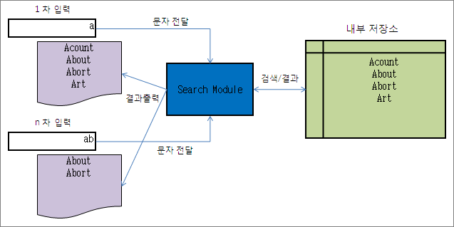
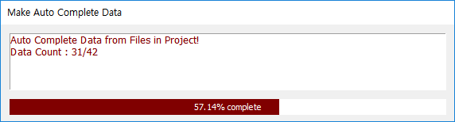
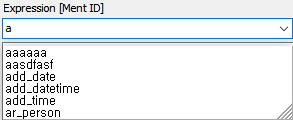
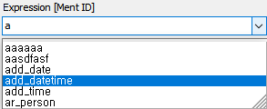
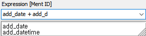

| Auto Complete | 시작 다음 이전 |
| 변수 또는 정의된 이름, 시스템 변수, 상수 등을 아이템 정보 테이블에서 추출하여 메모리에 저장 하였다가 사용자가 사용 시 첫번째 문자를 입력 하면 입력된 문자로 시작하는 데이터를 리스팅하고 연속해서 입력한 문자가 일치하는 데이터를 리스팅하고 마지막 하나의 데이터가 남았을 경우 남은 문자의 입력없이 자동으로 입력이 되는 방식 입니다.
Note: IID : Item Information Data
동작 구조

· 첫 문자가 "a" 가 입력되면 검색하여 "a" 로 시작하는 문자열 들을 리스팅하고 "ab"가 입력되면 "ab" 로 시작하는 문자열 들만 리스팅 합니다. · 리스트팅된 문자열이 하나만 남으면 남은 문자 입력에 상관없이 바로 문자열을 입력 Edit 에 표시 합니다.
데이터 생성 및 갱신
· 데이터 생성은 프로젝트 오픈 시 IID 가 체크 된후 생성됩니다. · 리본메뉴 Tools > Make Auto Complete Data 메뉴를 선택하면 기존 데이터는 삭제되고 새로 생성 됩니다. · 아이템 속성이 변경되거나 추가/삭제 된후 저장하면 IID 갱신과 함께 갱신 됩니다.(추가/갱신/삭제된 내용은 반드시 저장 해야 적용 됩니다)

적용 영역 및 적용 속성 항목
· 프로젝트 오픈 상태에서만 적용됩니다. · 아이템 속성중 Edit Box, Combo Box(Dropdown 형태) 가 대상입니다.
인터페이스
· 문자를 입력하면 입력된 문자로 시작하는 문자열들이 리스팅 됩니다.

· 문자열이 리스팅된 후 Tab 키를 누르면 리스트의 가장 위에 있는 문자열이 입력 되며, 키보드 방향키로 문자열을 선택한 후 Enter 키를 누르면 선택한 문자열이 입력되며, 마우스로 문자열을 클릭해도 입력됩니다.

· 문자가 자동 완성된 후에 다음 문자를 입력하여 자동완성을 하려면 구분자가 먼저 입력되어야 합니다. 자동완성 문자 사이의 기본 구분자는 스페이스 입니다.( "." 의 경우 session 변수 및 구조체 하위 변수의 연결자로 사용 되며, 연산자로도 사용 됩니다.)
구분자 : "!$.,&*+/^-<=>|() " - 공백 포함

· 자동완성의 시작은 앞에 구분자가 있어야 시작하며, 문자열 중간에 자동완성으로 입력도 구분자가 있다면 가능합니다.
· 문자열 중간에서 자동완성을 하는 경우에 중간에 입력한 문자와 뒤의 문자가 구분자로 구분 되어 있지 않으면 자동완성이 되면서 덮어쓰게 되니 주의 하여야 합니다.
데이터 적용 대상
· 프로젝트가 오픈된 상태에서는 Item Information Database 에서 검색되는 모든 아이템의 해당 속성이 대상이 됩니다. · 시나리오 파일만 오픈된 상태라면 오픈된 시나리오 파일에 포함된 아이템 에서만 정보를 추출 합니다.
|
| Copyrights(C) Bridgetec.co.kr. All Rights Reserved | 시작 다음 이전 |